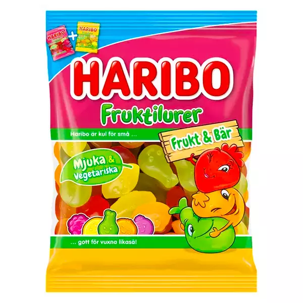

Haribo Fruktfilurer
Egentligen finns det inga "onyttiga" frukter i sig. Men vissa frukter kan anses mindre nyttiga, särskilt om man äter mycket av dem.
Egentligen finns det inga "onyttiga" frukter i sig. Men vissa frukter kan anses mindre nyttiga, särskilt om man äter mycket av dem.